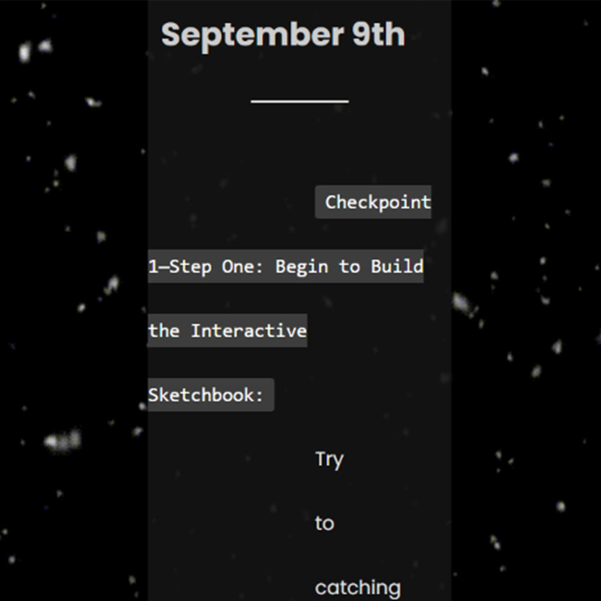
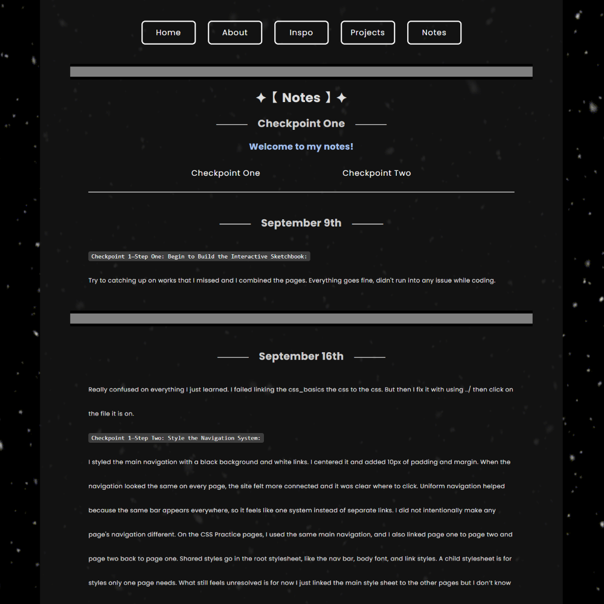

Checkpoint Two — Assessment Two: Revision After Peer Review:
My peer said that my overall performance was great. I agree that I need to work on multiple size screens. I disagree with them that I need to add the target="_blank" tag to any of my pages. I think this is more like a personal preference, I personally just don’t like how pages jump around opening new pages. I would do it only if it is going to a new website instead of inside of the website. I decided to work on multiple size screens. I was so frustrated at first because I don’t know what I should do with it. Because my site is in the middle and it is narrow, I wanted the middle part to be bigger when the screen resizes to a smaller window. So in class, I asked the professor how to do that. After I got the answer the fog in my mind just disappeared. It was really good to know the answer. lmaoooooo I made those changes because this is what I originally planned on working on already. I was finding a method to change when the screen size is smaller the font and the width etc can be smaller. so it fits in different devices. I leave the overall theme unchanged, I really liked how it is for the aesthetic part. The revisions improve the site A LOT!! For now, there is no problem for me yet. After someone else used my work, I don’t think I have learned anything. Because they are just saying the answer I already expect they would say. It is still in WIP, but I will keep updating it. The adjust part for the fonts and image also the overall layout as well, takes times to finish.

→

Checkpoint 2—Step 3: Interaction as Cohesion:
I have chosen to let the navigation bar repeat because I want the pages to look consistent so I use the same navigation bar throughout the website. It appears on every page at the top. I put it on top of the page to make it clear, so that people know where to click. It makes people know if they are clicking on the right thing while hovering on it. I keep the interaction consistent because I want people to know it is the same thing and it would be weird if it’s different on every page. It makes it visible when hovering on the buttons which makes it clear on what you are about to click on. I didn’t troubleshoot anything for this part. It’s more like adjusting the numbers than troubleshooting. I do think that the interaction makes the Sketchbook feel more cohesive.